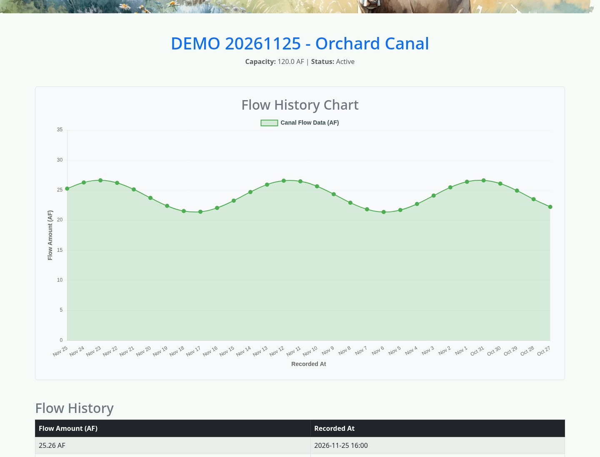

01 / Order details
Find the request details.
Individual order screens show the information behind a request, alongside lists of current and past orders.
Software portfolio / Irrigation operations
Delivery requests, order status, and canal records in one application. Software I built around the details of irrigation-water scheduling and the people preparing and reviewing requests.
Live demonstration with test data. Sign-in is required for the scheduling screens.
Inside the application / Test data
Actual application captures from November 25, 2026, using fictional records. Select an image to view it full size.


The task
Each delivery request needs a headgate, requested dates, and amounts. People preparing requests need to see their orders; administrators need a view of pending work and its status.
The application puts request forms, order lists, and review controls alongside canal and headgate records. Capacity, operating status, recorded flows, and flow history provide context for the work.
That is the kind of project I can help with: understand a specific task, bring the information together, and build a tool around how people use it.
See how we could approach your workflowThe scheduling workflow
The user and administrator screens give each part of the task a place: request details, pending review, and current and historical orders.
The request form collects the headgate, turn-on and turn-off dates and amounts, order date, and owner.
The administrator view brings pending requests together with approval and rejection controls and a place to display the rejection reason.
User order lists are grouped as running, pending, rejected, and completed. Administrator screens include current and past orders.
A closer look
01 / Order details
Individual order screens show the information behind a request, alongside lists of current and past orders.
02 / Canal operations
Canal and headgate screens display capacity, operating status, latest recorded flows, and flow-history charts and tables.
03 / Announcements
The administrator interface includes announcement publication status and controls for creating, editing, and deleting announcements.
This overview describes the application screens. Request submission, approvals, and physical water delivery were not tested. Time savings have not been measured.
More software by KERRCO
Your business workflow
Bring a scheduling headache, repeated office task, or scattered job information to a free initial conversation. We can look for a practical way to reduce the work.
Tell me what’s taking your time